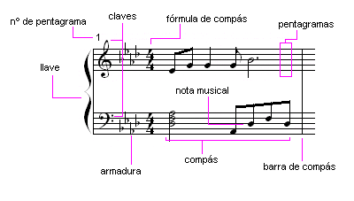

El solfeo es la acción de leer las notas de una partituras junto al compás, habilidad básica a la hora de tocar cualquier instrumento por lo que es una de las actividades que mas han de ser practicadas en caso de querer aprender bien el uso de un instrumento.
Existen 3 tipos de claves:
La escala de Do Mayor se incluye normalmente en todos los manuales de guitarra al comienzo, siguiendo a los ejercicios mecánicos de cuerdas al aire y las primeras digitaciones que se mueven en torno a cromatismos en los cuatro primeros trastes de cada una de las cuerdas. Que se sitúe al principio de los métodos tiene su porqué y es que es una escala fundamental y sencilla observad que todas sus notas son "naturales" esto es: no hay sostenidos ni bemoles. Podríamos decir que es "la madre del cordero" de todo lo que viene después en lo tocante (nunca mejor dicho) a las otras escalas que derivan de la misma y a los acordes, que no son más que armonizaciones en bloque (triadas o cuatriadas) de las notas de una escala determinada. Entremos en materia:
Esta sucesión de notas ( Do, Re, Mi, Fa, Sol, La, Si y Do) incluye un orden interno que responde a una fórmula muy sencilla y a unos intervalos. La fórmula es la siguientes: Tónica o 1ª, 2ª, 3ª, 4ª, 5ª, 6ª y 7ª nota. ¿Y eso de los intervalos qué es? Pues muy sencillo la distancia que hay entre una y otra nota, que en Música se mide en tonos y semitonos. La sucesión de intervalos de esta escala es: Tono, Tono, Semitono, Tono, Tono, Tono, Semitono. En el sistema universal (americano) lo encontrareis escrito así: W,W, H,W,W,W,H que responde a la inicial de dos términos en inglés sinónimos a nuestros "tono" y "Semitono": "Whole Note" y "Half Note". Toda esta secuencia sale de medir la distancia entre las notas: de Do a Re hay una distancia de un tono; de Re a Mi la distancia también es de un tono, de Mi a Fa la distancia es de medio tono, de Fa a Sol volvemos a la distancia de tono, lo mismo ocurre de Sol a La, y de La a Si; y finalmente la distancia de la nota Si al Do, octava que añadimos tras las 7ª nota de la escala, es de medio tono. Resumiendo, diremos que en esta escala todas las notas se encuentran a un tono de la siguiente excepto en dos casos: Mi y Fa que están separadas por medio tono; y Si y Do que les ocurre lo mismo. Esta característica es propia de las llamadas escalas diatónicas. En el caso de la escala de Do Mayor diremos que es una escala diatónica mayor.